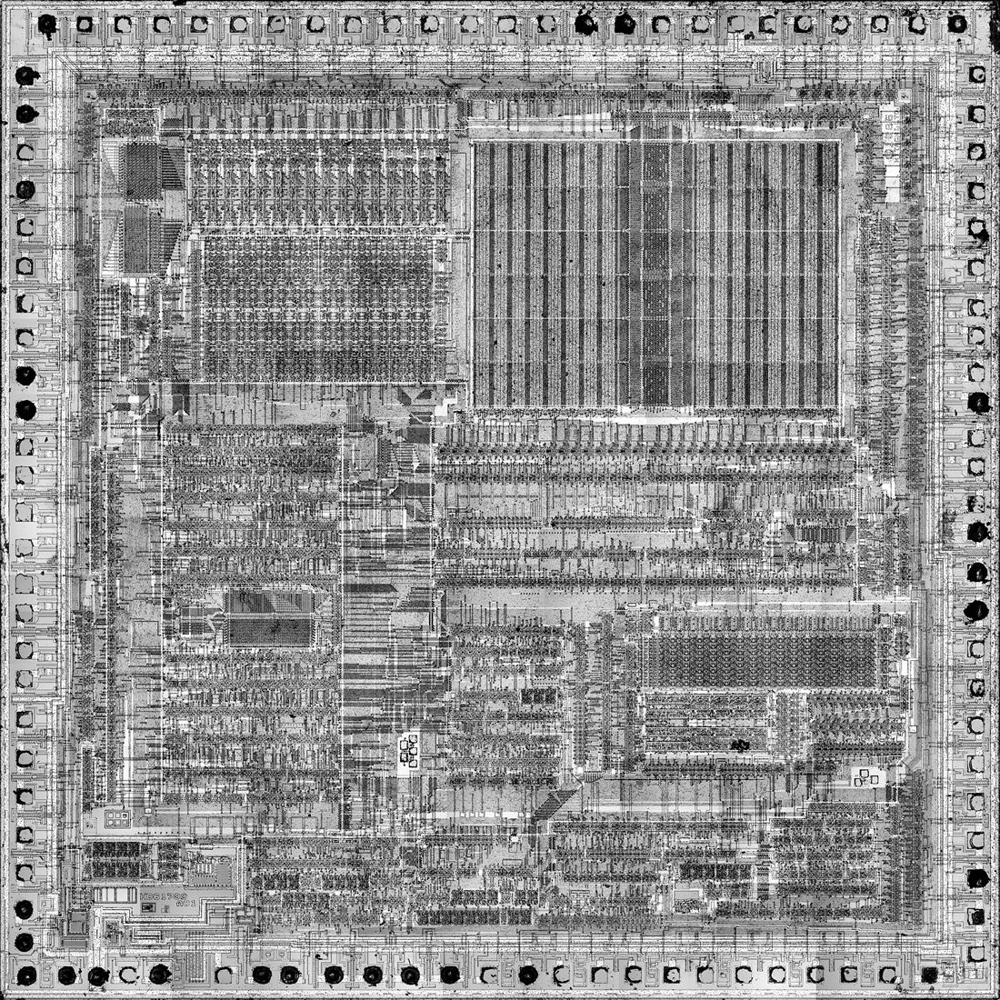

RTL 프론트엔드 설계와 FPGA 검증
현장에서 2년 7개월, FPGA를 다룬FPGA 현장 2년 7개월, RTL 설계 엔지니어 이기광
전력설비 진단 장비의 FPGA 로직을 설계하고 검증했습니다. 지금은 RISC-V CPU, UVM 검증, AXI SoC를 다루며 차량용 반도체와 NPU 쪽 RTL 프론트엔드 설계를 준비합니다.
2년 7개월 FPGA 로직 설계와 검증
WNS +1.676ns 100MHz RV32I CPU (4인 팀)
20분 → 6분 QSPI 멀티부트 원격 업데이트
특징
관심 분야

이력 한눈에 보기
FPGA 연구원으로 일한 2년 7개월 뒤, 교육과정에서 RTL 설계와 검증, 임베디드, SoC 순서로 넓혀 왔습니다.
경력
| 한 일 | 내용 |
|---|
설계와 검증 프로젝트
보드 위에서 돌린 프로젝트
STM32 NUCLEO-F411RE로 만든 임베디드 프로젝트입니다. 사진은 모두 직접 찍은 실물입니다.
실습 기록
프로젝트로 이어진 단계별 실습입니다. 각 저장소 폴더의 README에 동작과 구현 내용을 정리했습니다.
